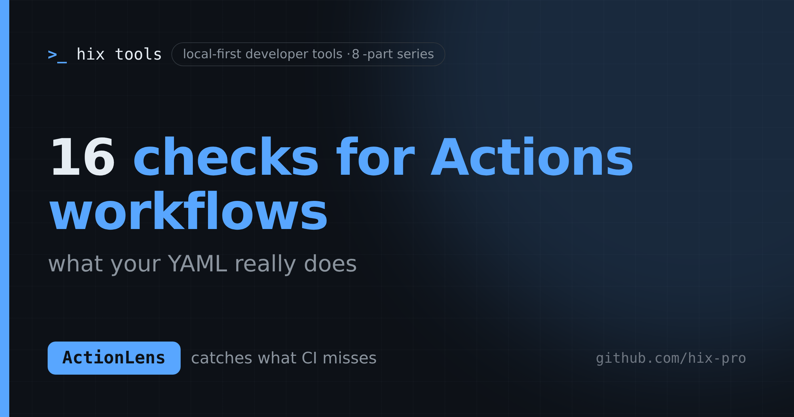

ActionLens · hix tools
16 things to check in your GitHub Actions workflows
ActionLens turns any GitHub Actions YAML into a job graph, real matrix size, token permissions, and a 16-rule security review.
A GitHub Actions workflow file is deceptively small, which is exactly the problem. needs: hides the dependency order. strategy.matrix can turn three jobs into eighteen without anything looking wrong. permissions: is missing from most workflows, which means every job inherits whatever the repository default is. And a single ${{ github.event.pull_request.title }} interpolated inside run: hands a pull request author a shell in your CI — with your secrets one curl away.
You can learn all of this the hard way, or you can paste the workflow into ActionLens and read it off a screen. ActionLens is a browser tool: load a workflow, get a job graph, the real matrix size, token permissions, and a 16-rule security and correctness review. No backend, no GitHub token, no upload — the YAML never leaves the tab. There is a live demo at https://hix-pro.github.io/action-lens/.
The checklist
Here is the full rule set, grouped by what it protects. Treat it as a review checklist even if you never run the tool.
Paths to a compromised CI run (critical):
write-all— a workflow or job token can write to every scope. If you did not setpermissions:explicitly, you probably have this.pr-target-untrusted-checkout—pull_request_targetchecks out fork code with a privileged token and repository secrets in reach. The classic path to a secrets-stealing build script.script-injection— an untrustedgithub.event.*,github.head_ref, orinputs.*value interpolated directly intorun:. The fix is routing it throughenv:and quoting.hardcoded-secret— secret-shaped values or live token patterns committed in the workflow. Findings are redacted; the value never appears in the report.missing-needs—needs:points at a job that does not exist, so the workflow cannot run at all.
Privilege and provenance (warning):
pull-request-target— the trigger itself runs privileged; treat any use as review-worthy.workflow-run-trigger— privileged, and consumes artifacts from another run.missing-permissions— jobs inherit repository defaults instead of the least they need.unpinned-action/ 10.unpinned-reusable-workflow— a tag or branch can move; the code that runs can change without any diff in your repo. Pin to a full 40-character commit SHA.secrets-inherit— hands every repository secret to another workflow in one line.self-hosted-runner— risky for public repositories and untrusted jobs.remote-script— a network download piped straight into a shell.
Hygiene (info):
missing-timeout— a hung job consumes runner minutes until the platform limit.secret-in-run— a secret interpolated into a shell command instead of anenv:variable.missing-trigger— a workflow withouton:never runs (someone should know).
The matrix math is real
Review tools that guess matrix sizes are worse than none. ActionLens implements GitHub's documented include/exclude semantics:
strategy:
matrix:
os: [ubuntu-latest, windows-latest]
node: [20, 22, 24]
exclude:
- os: windows-latest
node: 20
include:
- node: 22
coverage: true
That is five job instances: six combinations minus one exclusion, with the include entry merged into an existing combination. Include entries that cannot merge add a job. Expression-driven matrices like ${{ fromJSON(...) }} are marked dynamic and counted as one-or-more — never as a made-up exact number. The run footprint builds on this: job instances × assumed minutes × assumed price, with editable defaults (5 minutes, $0.008/minute). It is a planning estimate, not a bill, and public-repo runners are free anyway.
Try it on the bad example
The app ships with three samples, and the default one is deliberately awful: pull_request_target, write-all, a fork checkout, script injection, and a literal token in one short file. It fires nearly every critical rule at once, which makes it a decent tour. Two other samples — a real-shaped release pipeline with a scoped matrix, and a nightly bot with workflow_run, a self-hosted runner, and secrets: inherit — cover the warning-tier rules.
Exports cover Mermaid (README diagrams), Markdown (PR descriptions), SVG/PNG (slides and issues), and JSON (scripts). Reports contain configuration and findings only — run: script bodies and environment values are deliberately excluded, so a report is safe to paste without copying an injection payload or a secret.
What it will not do
Static review only: it does not run workflows, resolve expressions, evaluate if: conditions, or inspect action internals. A clean review means these 16 rules found nothing — not that the workflow is safe. Dynamic matrices are unknowable by design and marked as such. Secret detection is heuristic; a secret stored under an unrelated key will be missed. The engine (parser, matrix calculator, 16-rule analyzer, footprint estimator, exporters) is pure functions with 52 unit tests; the UI only handles state.
ActionLens is MIT-licensed and runs entirely client-side. Run it locally with npm install && npm run dev, or use the hosted demo — same code, no install.
It is one of nine tools in the hix tools suite — local-first, no backend, CI-ready. If you are hardening CI, EnvAudit catches environment drift and leaked secrets in the repo itself, and API Watch keeps third-party API contracts from breaking your build.